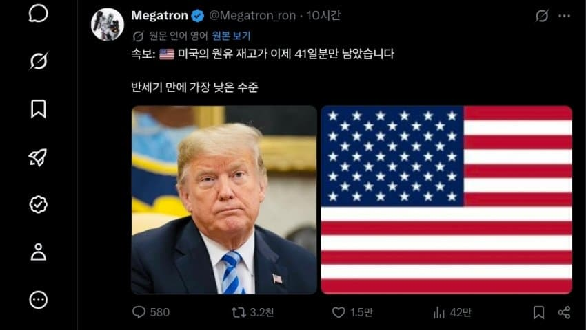

한국은 비축유 방출 이후에도 현재 200일 이상 비축중
일본도 250일 이상 비축중
한일은 급할경우 원유는 스와프해서 사용도 가능하고, 한국은 진짜 급할경우 사우디/UAE가 한국에 비축한 원유를 양해 구하고 사용가능한 상황

한국은 비축유 방출 이후에도 현재 200일 이상 비축중
일본도 250일 이상 비축중
한일은 급할경우 원유는 스와프해서 사용도 가능하고, 한국은 진짜 급할경우 사우디/UAE가 한국에 비축한 원유를 양해 구하고 사용가능한 상황
댓글
수집 당시 댓글 34개
키라라 · 20 시간 전
급하면 뽑아쓰겠지. 이미 생산량 1위 아냐? 미국 땅은 너무 사기 인거 같음. 반도체 말고 자급자족 안되는게 없는 듯
글쓰고싶어짐 · 14 시간 전
미국에서 나오는건 보통 경질유다
lpoql · 12 시간 전
그거 경질유 일상에서는 효율 ㅈ도없고 애초에 석유는 층별로 용도가 다 다름
바위게맛살 · 20 시간 전
전쟁에도 쓰고 있어서 그런건가?
쥐드립넷 · 20 시간 전
미국 극우들 좋겠네~
유산균을먹읍시다 · 15 시간 전
극좌는?
사천당가 · 20 시간 전
오일 선물 가즈아
스칸데르베그 · 20 시간 전
유정이랑 정제소 가동 여유분이 있는지가 중요함 이미 풀가동중인 상황이면 산유국이고 뭐고 한 달 안에 추가로 뽑아낼 수 없으니 답 없음
리센느팬 · 20 시간 전
별걸 다 걱정하네
회원정보조회수정 · 20 시간 전
살면서 미국 오일쇼크나는거 함 구경해보는것도 잼날듯
번째가슴 · 18 시간 전
오일쇼크가 뭐임?? 나 경제 몰라요
년째 MS단 졸개 · 16 시간 전
유가 폭등으로 사회 전반이 준 마비상태에 들어가는거. 유가 상승으로 운송이 작살나고, 생필품 가격부터 일단 생산되는 모든 재화들은 운송비의 극적인 상승으로 가격 폭등하고, 이게 즉각적인 물가 상승으로 이어지면서 사람들은 비싸진 물건들을 사지 못하게 되고, 그로 인해 돈을 못벌게 된 회사들은 줄도산하고, 주가도 나락가고, 그 외에 석유의 수십가지 부산물들로 생산되던 비닐이나 약품, 아스팔트 등도 생산을 못하게 되어 같이 작살나고, 대략적인 이런 흐름으로 한 사회가 한번 크게 주저앉는거임. 보통 그런 사태를 막으려고 정부가 똥꼬쇼를 하면서 어떻게든 원유(가공되지 않은 석유) 및 부가 생산물들을 보충하려고 난리치는데, 보통 이런건 산유국이 아니라서 외국에서 석유를 사오느라 여러가지 리스크(판매국에 무슨 일이 생겨서 원유 가격이 폭등하거나, 원유를 운송해주는데 문제가 생긴다든가)를 떠안고 가는 국가들에게만 발생해왔지만 미국은 산유국인데다가 체급이 커서 늘 원유 수급에 차질이 없으니 오일 쇼크는 다른 나라 일이었음. 애초에 미국에 오일 쇼크가 오는건 국제 관계 구조상 불가능한 일이라고 받아들여지기도 했고. 그런데 이번에 제 손으로 호르무즈 정세를 박살내놓고 보니까 어? 국제 유가가 폭등하네? 어? 저따 팔아야지! 가 발동해버린 거. 좀 더 구체적으로 말하자면, 미국에서 많이 나는 셰일 오일은 경질유지만, 원유 정제는 중질유 위주로 돌아감. 왜냐하면 중질유 정제가 돈이 많이 되거든. 경질유는 잡성분이 적은 맑은 원유임. 그래서 대충 증류만 해도 질좋은 휘발유를 대량으로 얻을 수 있음. 근데 중질유는 찌꺼기가 많아. 그래서 그걸 깔끔하게 정제해내려면 고도의 설비시설과 기술이 필요함. 그러다보니 찌꺼기가 많은 중질유는 싸고, 그래서 그 싼 기름을 수입해다가 정제해서 내다팔면 차익이 어마어마함. 심지어 찌꺼기도 잘 분류해서 다른 원료들로 팔아먹고. 거기다가 미국산 경질유는 고품질이라 정제 안하고 대충 내다 팔아도 좋은 값에 여기저기 잘 팔림. 국제적으로 중질유 정제시설은 많이 없는데 경질유 정제시설은 여기저기 많으니까 잘 사가지. 어차피 미국 국내에는 경질유 전용 정제 시설이 부족하니 굳이 정제해서 내다파는 귀찮고 돈많이 드는 짓 할 이유도 없고, 굳이 경질유 정제시설을 지금부터 짓는다고 해도 몇년 뒤에나 처음 가동될거고. 그런데, 어? 원유가 폭등했다고 한국이 우리 경질유를 내수 가격의 몇배로 엄청 사가네? 근데 굳?이 우리가 애국심을 발휘해서 미국 내수 시장에 싼 값이 기름을 풀어줄 이유가 있을까? 해버린거. 이게 단순히 애국윤리적 문제가 아니라 자본주의국가 논리로 보자면, 회사의 경영자는 법적으로 회사의 이익, 주주의 이익을 최대화할 의무가 있는데, 여기서 몇배의 이익, 엄청난 규모의 영업이익을 벌 수 있는 기회를 단지 애국적 행동이라는 의의 하나로 포기하고 싼 값에 내수시장에 자기들 생산품을 풀어버린다? 만약 정부측에서 딜을 걸어오거나 긴급 시행령 같은거로 법적인 강제를 했다면야 어쩔수 없네 라고 하면서 해버릴 수도 있겠지만, 그런게 없는 상황에서는 굳이 그렇게 할 필요가 없는 것을 넘어서 경영자에게는 이익 극대화라는 의무를 배신했다, 배임의 책임을 물을 수도 있게 되는거. 그래도 진짜로 미국에 사상 최초의 오일 쇼크가 와서 사회에 균열이 가고 무너지기 시작하게 된다면 그땐 정부측이 법적인 강제성을 띠고 너네 이제부터 국내 경질유 내수시장에 얼마로 팔아, 경질유 정제 시설도 짓기 시작해. 이래버리면 또 다른 양상이 나오게 될거임. 물론 그거만으로 오일 쇼크가 해결되지는 않을거지만.
번째가슴 · 14 시간 전
키보드 박살 안났냐??
초코다이제 · 12 시간 전
오.. 한방에 이해됐어 쩐다
락스계 · 11 시간 전
개길다 요약점 안읽음 ㅋㅋ
국세청장 · 19 시간 전
일본시골왜노자 · 19 시간 전
미국은 트럼프를 뽑은 대가로 한번 좆망해봐야함. 중국 러시아 크는꼴은 보기싫은데 미국은 혼나봐야 알지. 아, 대가리 빈놈들이라 모르려나?
oipddgr · 19 시간 전
캐나다 원유나올텐데 왜 개싸움한거임
사붕이 · 19 시간 전
지금 당장은 디젤이 더 문제
반박시니말이다맞습니다 · 19 시간 전
쟨 대가리 총 맞았어야 인류가 행복해짐
분만하자 · 18 시간 전
누굴 걱정하냐....
잉어빵붕어킹 · 18 시간 전
기름국아님? 왜부족함
차가운밤 · 17 시간 전
사우디 애들 뭐하냐 빨리 가져다줘라 저새끼들 기름 없으면 또 뭔짓할지 모른다
옛계정은어디갔나몰라 · 17 시간 전
쟤들은 더 뽑으면 되는 거 아니야?
글쓰고싶어짐 · 14 시간 전
미국에서 나오는건 보통 경질유임 그리고 돈으로 사법거래도 되는 나라인데 원유업계가 왕창 뽑아서 싸게 팔까 왕창 뽑아서 왕창 비싸게 팔까?
불편한사실 · 15 시간 전
트럼프 이후로 미국은 몰락의 길을 걷는듯 진짜 역사상 가장 무능한 지도자 탑5안에 들을거같은데 문제는 이런 얘를 좋다고 한국에서 빠는 애들이 있다는거임..
주차뿔라 · 15 시간 전
산유국이 왜..
그린라이트 · 15 시간 전
깨붕잉 · 14 시간 전
산유국 걱정할 필요가
망고와망고 · 14 시간 전
쟤들은 급하면 수출금지하면됨
사람은결국죽어 · 12 시간 전
트럼프식 해결방법은,, 한일 비축유 뺏어오는건데
관악구대학6길 · 11 시간 전
사우디 uae가 한국에 비축한 이유 -> 에스오일이 아람코 소속임
종이접기매매법 · 11 시간 전
연예인 대기업 미국걱정은 안해도된다
회차인생 · 11 시간 전
미국은 차가 없으면 아예 생활이 안되는 생활권이라. 연료사용량이 엄청남.